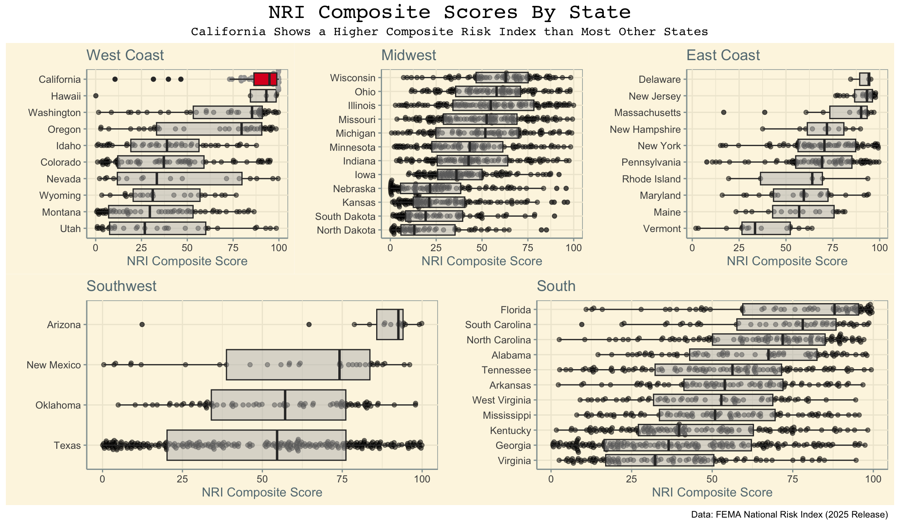

pacman::p_load('here',
'janitor',
'tidyverse',
'ggthemes',
'ggbeeswarm',
'patchwork',
'gghighlight')NRI Visualization
Load Packages
Read csv
nri_df <- read_csv(here('data',
'National_Risk_Index_Counties_807384124455672111.csv'))Warning: One or more parsing issues, call `problems()` on your data frame for details,
e.g.:
dat <- vroom(...)
problems(dat)Rows: 3232 Columns: 467
── Column specification ────────────────────────────────────────────────────────
Delimiter: ","
chr (67): National Risk Index ID, State Name, State Name Abbreviation, Stat...
dbl (396): OBJECTID, Population (2020), Building Value ($), Agriculture Valu...
lgl (4): Coastal Flooding - Number of Events, Earthquake - Number of Event...
ℹ Use `spec()` to retrieve the full column specification for this data.
ℹ Specify the column types or set `show_col_types = FALSE` to quiet this message.Clean Data
nri_clean <- nri_df %>%
select(c(1,2,3,4,6,7,10, 15)) %>%
clean_names() %>%
filter(!state_name %in% c('Guam', 'District of Columbia',
'American Samoa','Puerto Rico',
'Northern Mariana Islands', 'Virgin Islands'),
county_type == 'County') %>% # remove terretories
mutate('coast' = case_when( # Set up coastal index
state_name %in% c('Alaska', 'Hawaii', 'Oregon',
'Washington', 'California', 'Nevada',
'Utah', 'Idaho', 'Colorado',
'Wyoming', 'Montana') ~ 'west',
state_name %in% c('Arizona', 'New Mexico', 'Texas', 'Oklahoma') ~ 'southwest',
state_name %in% c('Kansas', 'Nebraska', 'North Dakota',
'South Dakota', 'Minnesota', 'Iowa',
'Missouri', 'Illinois', 'Wisconsin',
'Indiana', 'Ohio', 'Michigan') ~ 'midwest',
state_name %in% c('Pennsylvania', 'New York', "New Hampshire",
"New Jersey", 'Maine', 'Vermont',
'Delaware', 'Maryland', 'Rhode Island',
'Massachusetts') ~ 'east',
TRUE ~ 'south' # all the rest are the southern states
)) Plot data
west <- nri_clean %>%
filter(coast == 'west') %>% # Select the coast
ggplot(aes(x = forcats::fct_reorder(state_name,
national_risk_index_score_composite,
.fun = median), # Order states by risk index median
y = national_risk_index_score_composite))+
geom_beeswarm(alpha = .5, color = 'grey')+
labs(title = 'West Coast',
y = 'NRI Composite Score',
x = '')+
geom_boxplot(fill = '#DD0426')+
gghighlight(state_name == 'California', # Highlight california
unhighlighted_params = list(colour = NULL, alpha = 0.5))+ #Set the alpha and color of the unhighlighted
coord_flip()+
ggthemes::theme_solarized()
southwest <- nri_clean %>%
filter(coast == 'southwest') %>%
ggplot(aes(x = forcats::fct_reorder(state_name,
national_risk_index_score_composite,
.fun = median), # Order states by risk index median
y = national_risk_index_score_composite))+
geom_beeswarm(alpha = .5, color = 'grey')+
labs(title = 'Southwest',
y = 'NRI Composite Score',
x = '')+
geom_boxplot()+
gghighlight(state_name == 'California',
unhighlighted_params = list(colour = NULL, alpha = 0.5))+
coord_flip()+
ggthemes::theme_solarized()
midwest <- nri_clean %>%
filter(coast == 'midwest') %>%
ggplot(aes(x = forcats::fct_reorder(state_name,
national_risk_index_score_composite,
.fun = median), # Order states by risk index median
y = national_risk_index_score_composite))+
geom_beeswarm(alpha = .5, color = 'grey')+
labs(title = 'Midwest',
y = 'NRI Composite Score',
x = '')+
geom_boxplot()+
gghighlight(state_name == 'California',
unhighlighted_params = list(colour = NULL, alpha = 0.5))+
coord_flip()+
ggthemes::theme_solarized()
east <- nri_clean %>%
filter(coast == 'east') %>%
ggplot(aes(x = forcats::fct_reorder(state_name,
national_risk_index_score_composite,
.fun = median), # Order states by risk index median
y = national_risk_index_score_composite))+
geom_beeswarm(alpha = .5, color = 'grey')+
labs(title = 'East Coast',
y = 'NRI Composite Score',
x = '')+
geom_boxplot()+
gghighlight(state_name == 'California',
unhighlighted_params = list(colour = NULL, alpha = 0.5))+
coord_flip()+
ggthemes::theme_solarized()
south <- nri_clean %>%
filter(coast == 'south') %>%
ggplot(aes(x = forcats::fct_reorder(state_name,
national_risk_index_score_composite,
.fun = median), # Order states by risk index median
y = national_risk_index_score_composite))+
geom_beeswarm(alpha = .5, color = 'grey')+
labs(title = 'South',
y = 'NRI Composite Score',
x = '')+
geom_boxplot()+
gghighlight(state_name == 'California',
unhighlighted_params = list(colour = NULL, alpha = 0.5))+
coord_flip()+
ggthemes::theme_solarized()
# Use patchwork to create frame
((west + midwest + east )/ (southwest + south))+
plot_annotation(title = 'NRI Composite Scores By State', # Add title
subtitle = 'California Shows a Higher Composite Risk Index than Most Other States', # Add subtitle
caption = 'Data: FEMA National Risk Index (2025 Release)', # And Caption
theme = theme(plot.title = element_text(hjust = 0.5, 'mono', size = 20), # Edit title and subtitle size, location, and font
plot.subtitle = element_text(hjust = 0.5, 'mono', size = 12)))
- What are your variables of interest and what kinds of data (e.g. numeric, categorical, ordered, etc.) are they (a bullet point list is fine)?
- National Risk Index composite score - Numeric composite of the county percentiles
- State - Categorical
- How did you decide which type of graphic form was best suited for answering the question? What alternative graphic forms could you have used instead? Why did you settle on this particular graphic form?
- I decided to make a box plot because it is easy to see differences in medians and trends in general. I saw others using heatmaps and liked this Idea, but I feel like using the
theme_wsjfromggthemesallowed me to create a visual that looks straight out of a newspaper, which was my goal.
- Summarize your main finding in no more than two sentences.
- I found that the composite NRI score in California is much higher than that of other states, indicating that on average the counties in California are at higher risk.
- What modifications did you make to this visualization to make it more easily readable?
- The solarized makes the plot more intelligable, furthermore my use of a larger title and subtitle make the visualization easy to understand and interpret.
- Is there anything you wanted to implement, but didn’t know how? If so, please describe.
- I wanted to order the states by their latitudes, but could not figure out how to implement that change.